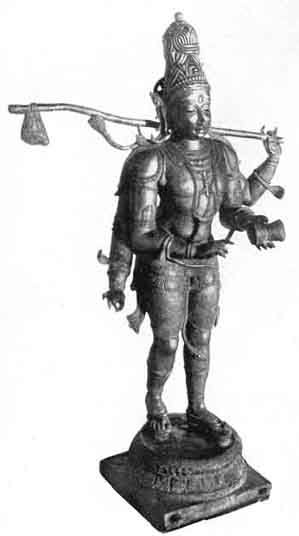
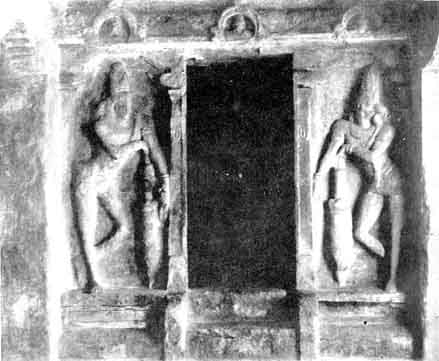
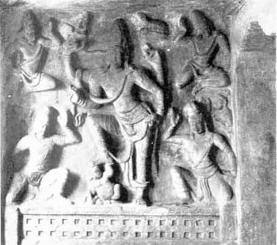

Sculpture at its Best
BY T.G. ARVAMUTHAN
III KANKALA-MURTI1

Kankala Murthi
A medley of tales, perhaps put together haphazard, gives us the story of Kankala-murti. We have tales of Bhairava which are hard to disentangle from those of Siva, but the two sets of tales get mingled up in stories of which some are said to relate to Bhikshatana-murti and others to Kankala-murti.
Bhairava, having nipped off the fifth head of Brahma, is asked to expiate the sin by going about begging for his food. In the joy of prospective liberation he goes around merrily: women fall in love with him and follow him in his wanderings. But neither begging nor the company of women admiring him having helped him to liberation, Bhairava marches up to Vishnu for advice, but, being stayed by Vishvaksena, the faithful guardian of the gate, grows furious and slays him on the spot. Outrage has thus been piled on outrage, and the need of expiation has grown all the greater. Bhairava is advised to go to Varanasi as at the sight of that holy city he would stand expiated. Joy comes to him once more and he starts again on a hopeful voyage, singing sweet songs. He bears on his shoulder a pole from the rear end of which hangs a bundle in which are stowed away the limbs of Vishvaksena, and he goes sounding a tiny drum, while an even larger throng of admiring women follows close on his heels. He has no more cares: he feels assured of liberation from his sins: his steps are light though his shoulder is oppressed, and his songs are merrier and sweeter. He reaches Varanasi and his sins flee.
Kankala-murti is an idolized Pilgrim whose Progress has an interest far different from that which Bunyan's hero has been able to evoke. To understand him we should know his brother in spirit, Bhikshatana-murti. We shall say more of both when we publish, as we intend to shortly, a picture of Bhikshatana-murti.
The image we have illustrated belongs to the temple at the top of the rock in the centre of Trichinopoly.
1
See the frontispiece.
IV. Art of the Days of Mahendravarman

Dvara-Palakas (Gate-Keepers)
Up the rock in the centre of Trichinopoly are two caves, both of which seem to have been excavated in the days of Mahendravarman I, a Pallava King of the early years of the seventh century A.D., who plumed himself on his fastidious tastes and many-sided accomplishments. The upper of the two caves is a low hall of unpretentious dimensions, but it contains some sculpture which is notable for its excellence. At one end of the hall is a deep niche, –really a shrine, –in which once stood an idol of Siva and a statue of the King. On either side of the entrance to this little shrine stands a door-keeper whose lineaments are now much damaged by weather and hard usage. Though too little remains of the sculptures to help us to judge of the finished figures, enough still remains to give us a clear idea of the pose. The dvara-palakas stand on duty, but at ease, –not stiff and wooden, –in the calm confidence that no contingency would arise for them to use their heavy clubs. The assurance of perfect watchfulness and sleepless alacrity cannot be expressed in fewer strokes.

Siva
At the other end of the hall is sculptured a panel depicting the story of how Siva became Gangadhara (‘The Wearer of the Ganges’). At the foot is a platform, the front of which is fashioned on the model of the railings which we see among the sculptures of Amaravati. On this platform is staged a tableau the principal figure of which is Siva who, planting his left foot firm, has leant forward to receive on his head the furious on-rush of the Ganga as she is proudly descending to the earth in response to the prayers of Bhagiratha, and having received her on his head made her wind her way through the maze of his matted locks till she wearied of her journey, lost the pride and the fury of her pace and sighed for the freedom of the fresh air. Having thus broken her spirit and saved the earth from the impact of her onrush, Siva allows her to issue from his matted locks in a stream, thin of volume and sluggish in flow, and so she goes her way to the earth, where she purifies the bones of the tribe of Sagara and carries plenty and purity to all the land she waters. On one side kneels Bhagiratha whose austerities were severe enough to bring Ganga down to earth but not powerful enough to stay the mad rush of the torrent. The other figures in the tableau are rishis and other companions of Bhagiratha, and all of them offer prayer and adulation to the merciful Siva.
This group deviates in some respects from the directions contained in the works on sculpture, but the result does certainly justify the deviation. As in all Indian Art, it is the central figure that evokes admiration: if examined part by part, the figure is by no means striking; but so skilful is the composition that the figure emerges almost as a masterpiece. For strength and firmness one may wander far and not easily find its like. It is true that this panel cannot stand comparison with the magnificent group at Elephanta dealing with the same theme, though on a different conception of it: none the less, this piece of sculpture reduces the events to the merest essentials and keeps Siva in the forefront. For serenity of pose and expression it is hard to find a parallel, either earlier or later.1
1 The three illustrations to this article are from photographs specially taken under my direction for the Government Museum, Madras. I am indebted to Dr. F. H. Gravely, Superintendent of the Museum, for permission to reproduce them.